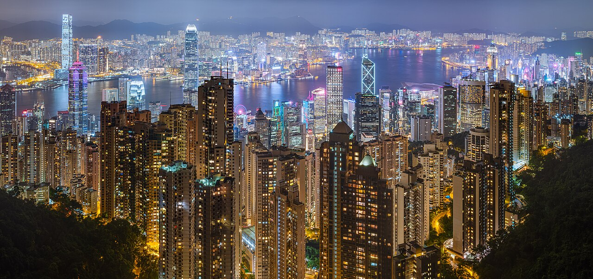

Hong Kong in a Port Day: The Peak, the Star Ferry, and the Harbour

Hong Kong is the rare cruise port where the postcard view is also the practical plan: cross the harbour, ride up the Peak, come back down for dim sum, and you have seen the city. The one thing that changes everything is which terminal you dock at — and the one thing that ruins the day is trying to do both sides of the harbour plus a market plus a hike. Pick the harbour, the Peak, and one neighbourhood, and the day works.
Arriving: two terminals, two very different days
Hong Kong has two cruise terminals, and they are not interchangeable. The Ocean Terminal in Tsim Sha Tsui puts you on the Kowloon waterfront, a short walk from the Star Ferry pier, the MTR, and the Tsim Sha Tsui Promenade — you can be looking at the skyline within fifteen minutes of clearing the terminal. The Kai Tak Cruise Terminal, on the old airport runway across the harbour, is isolated: there is no MTR station at the terminal yet, and you will need a taxi or a bus to get anywhere. From Kai Tak, budget a taxi into Tsim Sha Tsui or Central and the same back — it is the price of the terminal, and it is worth knowing before you plan the day around a tight schedule.
Immigration is in the terminal and usually quick. Before leaving, confirm the all-aboard time and whether the ship is on Hong Kong time — most ships are, but the check takes ten seconds and saves a bad surprise.
The morning: cross the harbour, ride the Peak
Start on the Hong Kong Island side. The Star Ferry from Tsim Sha Tsui to Central is the best HK$4–6.50 you will spend all day — a ten-minute crossing with the skyline filling the window, and the cheapest harbour view in the city. From Central Pier, the Peak Tram terminus is a short walk (or a short taxi) up Garden Road. The tram climbs at an angle steep enough that the buildings look like they are leaning, and it drops you at the Peak Tower with the whole harbour spread out below.
The Peak Tram return runs roughly HK$65–90 depending on the ticket type — buy the return, not two singles, and consider booking online if the queue at the terminus looks long. The Sky Terrace viewing deck at the top is the paid viewpoint; the free alternative is the Lugard Road walk, a flat, paved loop around the Peak that gives you the same harbour panorama without the ticket or the crowd.
Lunch: dim sum in Central or a market meal in Kowloon
Come down from the Peak and eat in Central: the lanes around Wellington Street and Lyndhurst Terrace are dense with dim sum houses, noodle shops, and cha chaan teng (Hong Kong-style cafes) where a filling lunch runs roughly HK$60–120 per person. If you crossed back to Kowloon instead, the cooked-food stalls around the Temple Street area and the small restaurants on Nathan Road serve the same range. Either way, lunch here is fast, cheap, and very good — do not spend the port day in a hotel buffet when the street outside does it better for a tenth of the price.
The afternoon: one side of the harbour, properly
After lunch, stay on one side. On the Kowloon side, walk the Tsim Sha Tsui Promenade from the Star Ferry pier past the Hong Kong Museum of Art to the Avenue of Stars — it is flat, free, and the skyline across the water is the view the Peak charges for. The Symphony of Lights show plays across the harbour at 8:00 PM — only ships with a late departure can catch it. The Temple Street Night Market and the Ladies' Market on Tung Choi Street are the shopping stops, and both are better in the late afternoon than at midday.
On the Hong Kong Island side, the alternative is the Mid-Levels Escalator — the world's longest outdoor covered escalator system, free to ride — up through SoHo's lanes, or a walk through Sheung Wan's dried-seafood streets and the Man Mo Temple.
Getting around
Buy an Octopus card at any MTR station or convenience store — it works on the MTR, buses, trams, the Star Ferry, and even convenience stores, and you can refund the balance before you leave. MTR rides run roughly HK$5–15 for the short hops a port day needs, and the system is fast, clean, and signposted in English. The Star Ferry is HK$4–6.50 depending on deck and day. Red urban taxis have a flagfall of HK$29 — fine for short hops, but traffic on Hong Kong Island can make the MTR faster. The old double-decker trams on Hong Kong Island are slow and wonderful: a flat fare, an open top deck, and the best slow tour of the city for almost nothing.
What a port day costs (approximate, per person)
- Octopus card (refundable deposit + stored value): roughly HK$150 to start, much of it refundable
- Star Ferry return: roughly HK$8–13
- Peak Tram return: roughly HK$65–90
- MTR rides for the day: roughly HK$20–40
- Dim sum / market lunch: roughly HK$60–120
- Comfortable total without shopping: roughly HK$200–300 (about US$25–40)
Tips for cruisers
- Know your terminal before you plan. Ocean Terminal means walk to the ferry; Kai Tak means taxi or bus first, and the return trip needs the same time buffer.
- Do the Peak in the morning. The queue grows through the day, and the haze usually thickens by afternoon.
- Carry cash for the markets. Cards work almost everywhere else, but the market stalls and the smallest eateries are cash-first.
- Keep an hour in hand. Hong Kong traffic can turn a 20-minute taxi into 50 minutes with no warning — the MTR is the reliable way back to the ship.
Prices and hours are approximate and were checked in November 2026; fares and ticket prices change, and the Peak Tram price varies by ticket type. Confirm on the day if a price decides the plan.